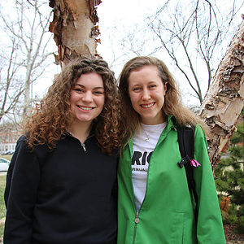

-
'It was a Decision Between a Few Cans of Soup or a $7 Box of Tampons'
Jane Kielhofner and Jacey Schank are both on the executive board of a University of Missouri menstrual health student group called Period @ Mizzou. The group is focused on discussing and advocating for menstrual health, and is part of a larger national organization.
Jane and Jacey have known each other for many years, and they spoke about their organization, and why it’s important. They also spoke about some legislative changes they are working toward like House Bill 747, which aims to change "the laws regarding the taxation of feminine hygiene products, diapers, and incontinence products.”
Listen Here
- 
-
'I was Charged $200 for Her to Tell Me What I Already Knew'
Cassie Ferrick was charged $200 at the University of Missouri Student Health Center for a 10 minute visit. A year and a half ago, Ferrick discovered she had some lumps in her left breast one night. She decided to make an appointment at the UM Student Health Center to get checked out. Her appointment didn’t include any lab work or x-rays just a simple 10 minute examination.
Ferrick’s doctor just confirmed that there were lumps in her breast and told her to go see a specialist. She was okay with this until she got a $200 bill in the mail for her appointment.
Listen Here
-